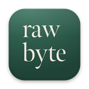

Rawbyte · ikon og logo · runde 2 · ← runde 1 · runde 3 →
Du likte 11 «Biten» best, og at teksten i 16 ble blendet inn. Her er 21–30: ti nye tolkninger av biten, nå med r i stedet for b. Bitt flis, piksler, lag, smuler, versal R og et helt ordmerke med bitt. Deretter 31–40: ti nye retninger, mange med bevegelse hentet fra «Rawbyte i bevegelse»: avgangstavle, dekoder, fremkalling, filmremse, signatur, mørkerom, metaballer og nordlys. Ordmerkene bruker de samme tekstanimasjonene: blur, byte-støv, avgangstavle, dekoder og skarpstilling.

i dag · 96 px